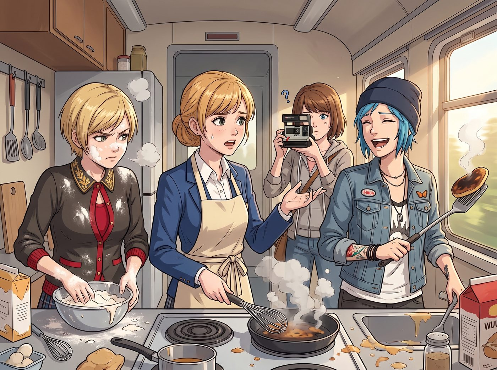

黑暗料理課

週五的法定放空下午，一號車廂的小廚房迎來了工坊史上最嚴峻的「生存技能培訓」。
起因是 Kate 下週需要去西雅圖參加一場全基督教青年志工大會，得離開三天。看著這三個平時只會叫重油外賣、連微波爐加熱時間都能算錯的室友，大天使滿臉擔憂，決定手把手教她們做三道基礎家常料理：法式歐姆蛋、奶油蘑菇濃湯與煎平底鍋鬆餅。
然而，料理台一交出去，廚房瞬間從溫馨生活片變成了化學與重工業的翻車修羅場。
一、災難現場：三種截然不同的人設翻車
Chloe 本來煎歐姆蛋的手法相當俐落——常年在雙鯨餐廳後廚幫 Joyce 打下手的底子擺在那裡，小火慢推、鍋鏟翻動的節奏都拿捏得有模有樣，Kate 甚至一度滿意地點頭。
然而，就在歐姆蛋即將完美出鍋的最後十秒，Chloe 手機螢幕突然亮起，跳出一則播放量破千萬的短視頻——網紅廚師正單手將鍋子高高拋起，讓歐姆蛋在半空中翻騰一圈半，帥氣落回鍋中。
「這個必須學！」Chloe 眼睛一亮，職業病般的好勝心瞬間覆蓋了理智。她猛地將鍋子往上一甩，試圖複製那個瀟灑的拋接動作——結果拋得太高、角度太猛，半熟的歐姆蛋直接飛出鍋沿，重重砸在了滾燙的爐面上，發出「刺啦」一聲暴響，蛋液瞬間焦黑黏死在鐵板上，變成了一團無法挽回的「炭烤蛋渣餅」。
「這叫……失敗的空中力學實驗。」Chloe 尷尬地摸了摸鼻子，看著自己親手毀掉的、原本堪稱完美的半成品，「明明手法都對，就是不該手癢學那個拋鍋的。」
Max 習慣了暗房調配顯影液的毫升級思維，拿著量杯和電子秤手抖得厲害。在加黑胡椒和鹽時，她滿腦子都在算比例，結果把旁邊 Kate 裝在深褐色玻璃瓶裡的烘焙用極苦純可可粉，當成了黑胡椒粉倒進了濃湯裡；甚至在勾芡時手忙腳亂，把麵粉攪成了一個個堅硬如橡皮擦的麵疙瘩。最後成品是一鍋顏色泛著詭異灰紫色、浮著麵粉硬塊、聞起來像巧克力卻嘗起來鹹苦無比的「顯影廢液濃湯」。
Victoria 全程戴著一次性醫用手套，以米其林三星主廚的挑剔姿態指揮操作。她嫌普通黃油香氣不夠層次，擅自倒入半杯自己珍藏的波爾多紅酒和昂貴的松露油；為了追求極致的圓形構圖，她用游標卡尺去量麵糊直徑，導致麵糊在低溫鍋裡乾燒了二十分鐘，最後烤出了一塊硬度足以防彈、散發著發酵酒味的「深紅松露橡膠墊」。
二、試吃環節：大天使的極限靈魂淨化
長木桌前，四個人圍著這三盤堪稱生化奇觀的料理陷入死寂。
「喂……」Chloe 拿著叉子戳了戳那塊像鐵板一樣的鬆餅，咽了口唾沫，「大股東，妳這鬆餅拿去當二號車廂的減震墊片大概能用十年。」
Victoria 嫌棄地推開那盤冒黑煙的炒蛋，冷笑反擊：「至少我的鬆餅沒有致癌的焦炭顆粒，Price，妳那盤東西送去實驗室可以直接提煉活性炭。」
就在三人準備把這些東西倒進廚餘桶時，Kate 走了過來，繫著乾淨的小花圍裙，溫柔地在每人頭上輕輕敲了一下，隨後深吸一口氣，拿起小勺子，在每盤黑暗料理裡象徵性地嘗了一小口。
Kate 的表情在零點五秒內經歷了震驚、麻木與靈魂出竅，但隨後她依然露出了聖母般的溫和微笑：「嗯……Chloe 的蛋雖然焦了，但鹽味很均勻呢；Max 的湯……很有後現代先鋒藝術的層次感；Victoria 的鬆餅……松露香氣非常高貴哦。」
三人看著 Kate 甚至連眉頭都沒皺一下就強行給出的天使評價，集體羞愧得低下了頭。
三、終極應急預案：大天使的傻瓜冷凍包
「不過，為了大家在我離開的三天裡不會因為食物中毒被 Emma 送去急診室——」
Kate 笑瞇瞇地拉開了工坊雙門大冰箱的冷凍層。只見裡面整整齊齊碼放著十二個貼著手寫標籤的玻璃保溫盒，每個盒子上面甚至用可愛的小松鼠貼紙畫好了操作步驟與倒計時。
「老天保佑……」Chloe 一把抱住 Kate 的肩膀，長長地舒了一口氣，「Kate，妳下週要是敢晚回來半個小時，我們三個大概就只能靠吃外牆壁畫上的防銹漆為生了。」
客廳裡爆發出一陣大笑。點唱機流淌著放空日的悠揚爵士樂，夕陽將小廚房裡狼藉的麵粉與鍋碗瓢盆染成金色。雖然三人的廚藝課徹底以翻車告終，但看著冰箱裡滿滿噹噹的愛心便當，這節車廂裡流淌的，依然是全波特蘭最踏實、最溫暖的煙火日常。